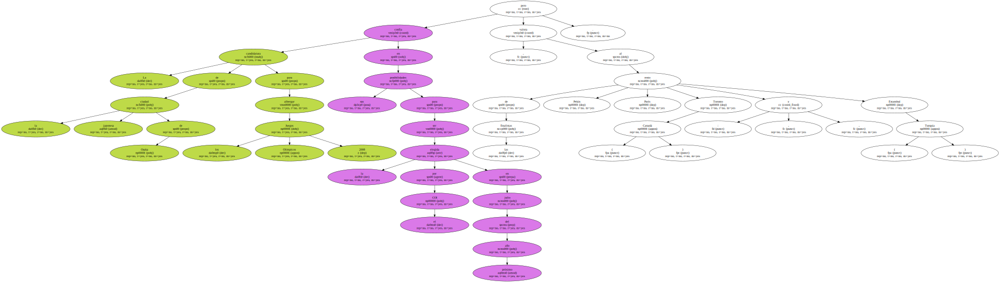
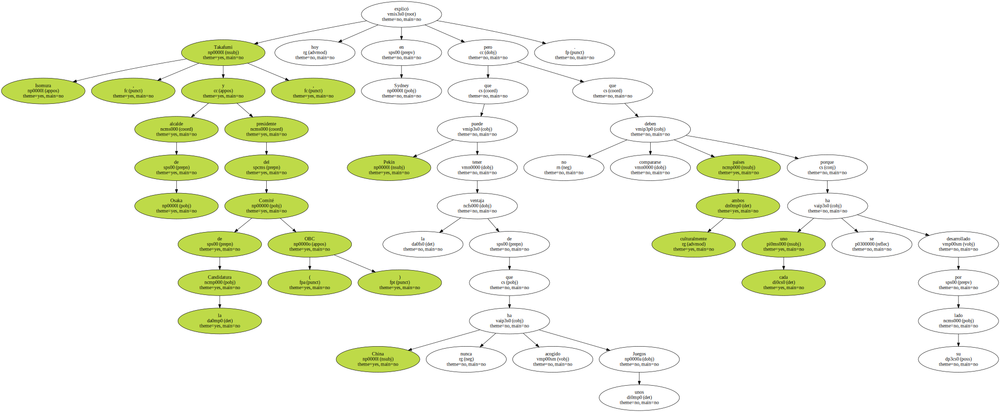
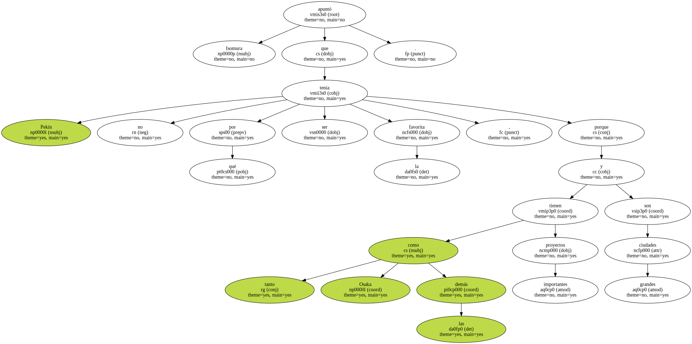
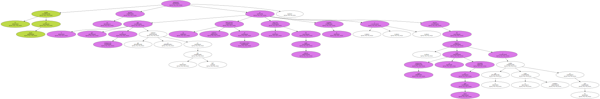
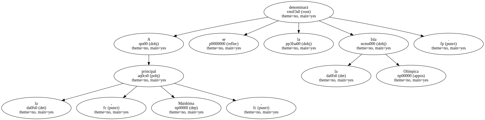
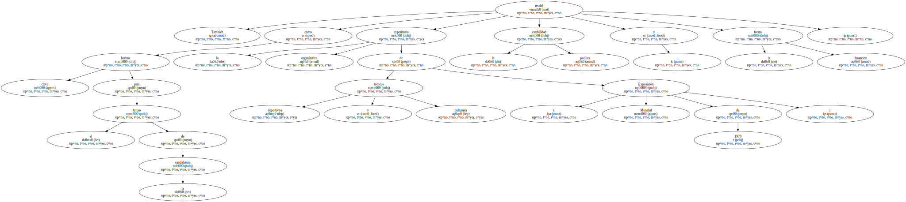
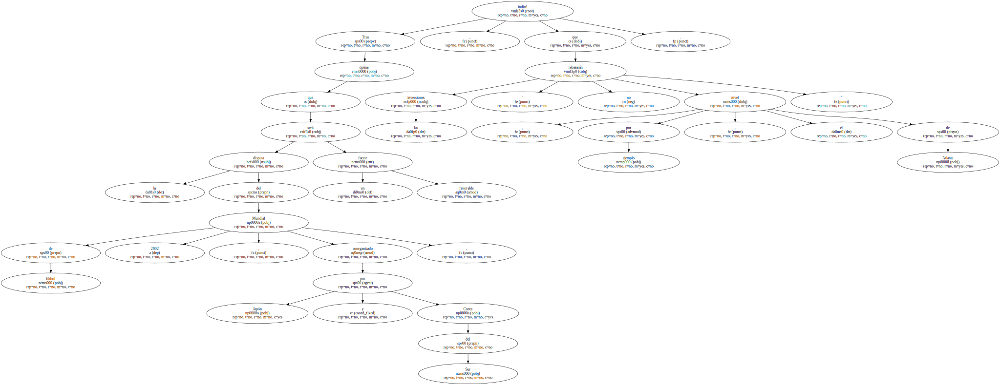
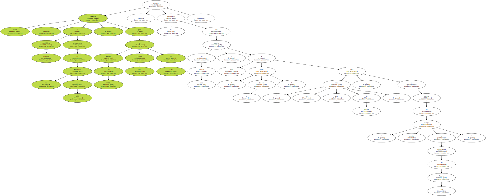

La candidatura de la ciudad japonesa de Osaka para albergar los Juegos Olímpicos 2008 confía en sus posibilidades para ser la elegida por el COI en julio del próximo año , pero valora al resto de las finalistas : Pekín , París , Toronto ( Canadá ) y Estambul ( Turquía ).
Takafumi Isomura , alcalde de Osaka y presidente del Comité de la Candidatura ( OBC ) , explicó hoy en Sydney que Pekín puede tener la ventaja de que China nunca ha acogido unos Juegos pero que no deben compararse culturalmente ambos países porque cada uno se ha desarrollado por su lado.
Isomura apuntó que Pekín no tenía por qué ser la favorita , porque tanto Osaka como las demás tienen proyectos importantes y son grandes ciudades.
El alcalde de Osaka fundamentó sus opciones en el gran plan de reurbanización que se culminará en el año 2007 , las modernas infraestructuras de telecomunicaciones , la protección del medio ambiente , la seguridad y lo atractivo del proyecto , cuyas instalaciones ya están en buena parte construidas y que tendrán su centro neurálgico en tres islas.
A la principal , Maishima , se la denominará la Isla Olímpica.
También resaltó como hechos clave para el futuro de la candidatura la experiencia organizativa de torneos deportivos y culturales ( Exposición Mundial de 1970 ) , la estabilidad política y la fuerza financiera.
Tras opinar que la disputa del Mundial de fútbol 2002 , coorganizado por Japón y Corea del Sur , será un factor favorable , indicó que las inversiones " no rebasarán , por ejemplo , el nivel de Atlanta ".
Mikako Kotani , medallista olímpica y componente de la Ejecutiva del OBC , natural de Tokio pero cuya madre es de Osaka , ensalzó la amabilidad del pueblo de esta ciudad , que " adora el deporte " y tiene " un gran deseo de amistad " , al margen de " mucha energía a disposición de los Juegos ".
Yushiro Yagi , presidente del Comité Olímpico Japonés ( JOC ) , aclaró que pese a que su país ya ha sido escenario de Juegos Olímpicos confía en que ese aprendizaje les sirva para albergar otros con garantías y añadió que " la candidatura de Osaka es muy sólida y dispone de todo lo necesario ".